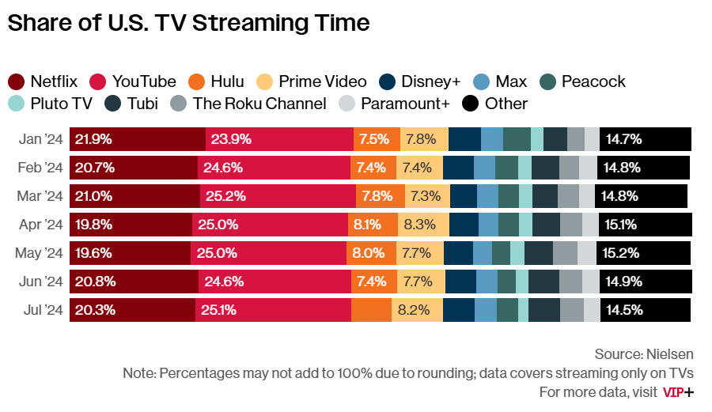

Too Many, Too Fast
When I open my email, I cringe. I have hundreds of unread emails. Not from coworkers about important work. But instead from the many newsletters that every influential person on the internet now has. When I signed up for these newsletters, I was excited. Insights delivered right to my mailbox! What was initially 3-4 newsletter emails a week quickly turned into over two dozen. For someone who likes the practice of inbox zero this caused unneeded stress.
In order to offload these emails into another place for reading, I signed up for services like ReadWise. Which has a great reading app you can have newsletters automatically get sent to. This was helpful at first, but eventually turned back into email. When I look at my “feed” on the Reader app, I have 121 unseen newsletter emails. That’s insane. I cannot read all of these, nor do I want to. Something needs to change.
Who Does Things Right
You know who does things right? YouTube. They have it all figured out. Instead of seeing a list of videos in chronological order, they show you what videos you might be most interested in. Not just from channels you follow but for any channel. You can interact with videos you like by watching them multiple times, liking the video, or subscribing to the channel. This ensures you see more content like it. Or if you hate the video you can give the thumbs down, click on “show me less of this”, or even block the channel entirely. With a few smart features they fixed every thing that is wrong with other forms of content like newsletters and blogs.
When I open up my YouTube homepage on the app, I see a sea of great options. The first video recommended on the page is for a podcast I like that just posted a new video two hours ago. As I scroll I see content from last week, last month, even as far back as two years ago. These are all things that interest me, not just the latest content from channels I follow. I even see content from channels I’ve never heard about, but is chosen based on my interest in other liked videos. This is why YouTube dominates.

Make Blogs Great Again
Ideally there should be a service that is like YouTube but for blogs. Anyone who has a blog can connect their site to the service, and posts are algorithmically provided to the user based on what the user likes. It won’t be what causes the most outrage or reactions, but instead what makes them entertained or more informed. The site would have no news, just evergreen content that’s just as relevant next year as it is now. Sites like Medium try to do this today, but their biggest flaw is that they live behind a walled garden. Meaning a blog owner has to only post their stuff to Medium and not on their own site. This is not ideal. Since you now have to play by Mediums rules and all of your content now lives on a platform you don’t control. You could argue YouTube is the same but YouTube is the only way people consume user submitted video content today. There is no second choice. Compared to blogs where anyone can host their own for free via GitHub (that’s what I do).
There could also be amazing AI features built into this new blog recommendation service. What if all blog posts on the site were indexed and you could ask questions about the blog via GenAI? Imagine having a conversation with Paul Graham, powered by every piece of advice he has ever written about building businesses or technology. It would basically be a mentor on demand. Always ready to bounce ideas off of or think through hard problems.
The world has too many new(s) things. We need to make old things, like blogs, new again.